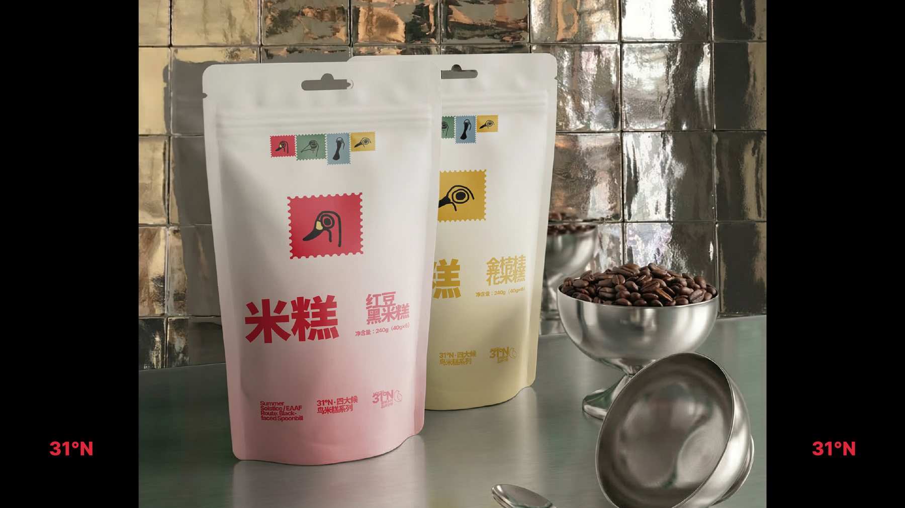
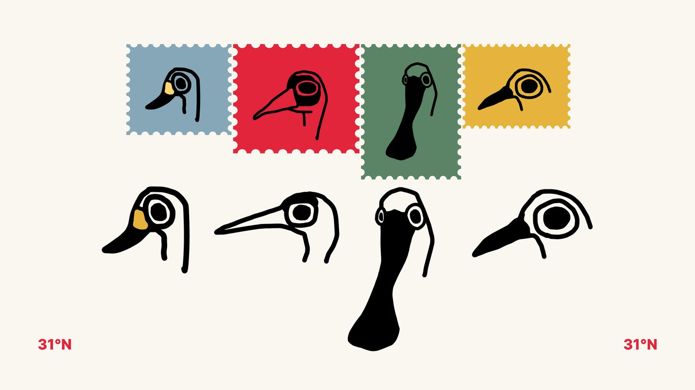
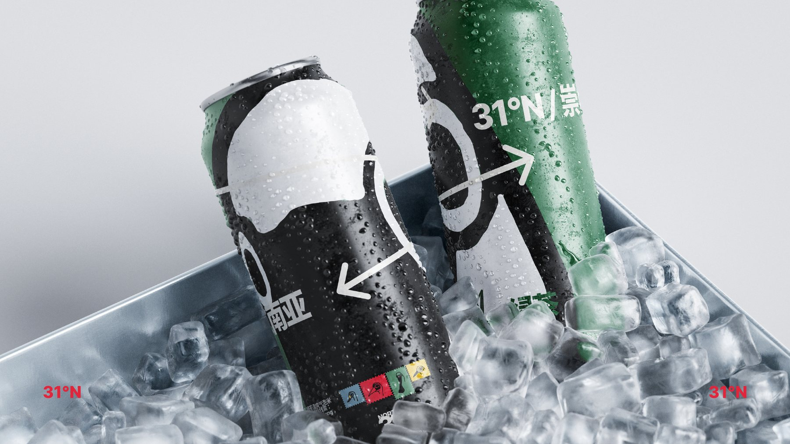
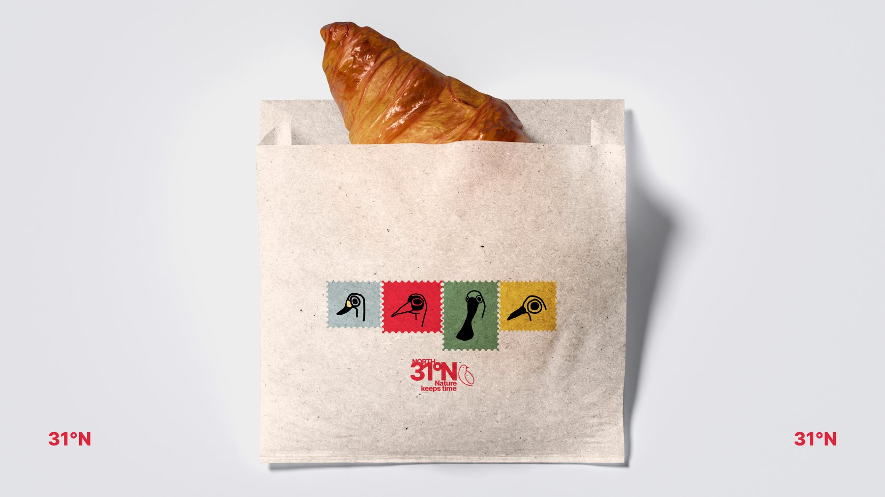
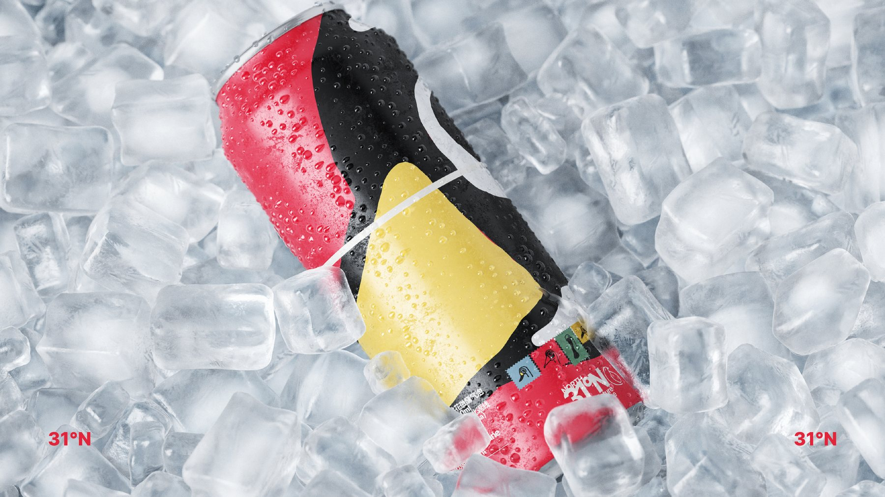
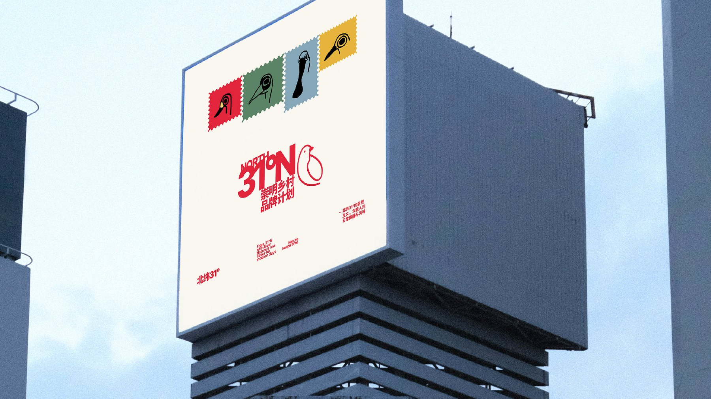

黑脸琵鹭
Black-faced Spoonbill / Platalea minor
匙形长喙掠过浅滩。保护潮滩，就是保护它迁徙路上的补给站。

Rural brand building / Chongming
以四种崇明候鸟为视觉媒介，让包装成为认识湿地、连接乡村与参与共生的入口。
31°N 以崇明乡村为原点，将稻田、湿地、候鸟迁徙与地方风味连接成一套年轻而有公共意识的品牌系统。
品牌视觉保留大胆的红色、邮票式候鸟图形与现代字体，同时加入候鸟档案、共生行动和自然教育信息，让消费触点转化为社会参与触点。
Visual Language
辅助图形来自崇明四种代表性候鸟。邮票边齿象征迁徙中的停靠与收集，也让包装天然具备集章、扫码、观察记录等互动机制。

Bird Island Files
Black-faced Spoonbill / Platalea minor
匙形长喙掠过浅滩。保护潮滩，就是保护它迁徙路上的补给站。
Hooded Crane / Grus monacha
冬季抵达东滩越冬。留下一片安静湿地，也留下一次完整迁徙。
Tundra Swan / Cygnus columbianus
从北方来到崇明越冬。它需要开阔水面，也需要人与自然保持距离。
Dunlin / Calidris alpina
体型很小，却跨越漫长迁飞路线。每一片泥滩，都是它的餐桌。
Packaging System




把崇明带到城市，也把城市的关注带回鸟岛。
Color System
Social Design
买到的不只是风味，也是一次参与
每个包装触点都加入三层信息：候鸟知识、共生行动、参与入口。消费者可以扫码查看候鸟迁徙路线、领取电子邮票、参与观鸟记录，并了解崇明湿地自然教育计划。
一款产品对应一只候鸟，建立可查询的真实生态档案。
呈现稻田、村庄、湿地、候鸟之间的共生关系。
购买与扫码支持自然教育、湿地观察与社区共创。